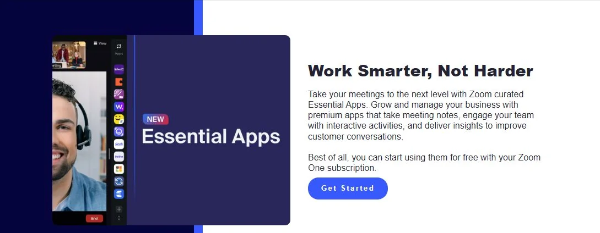
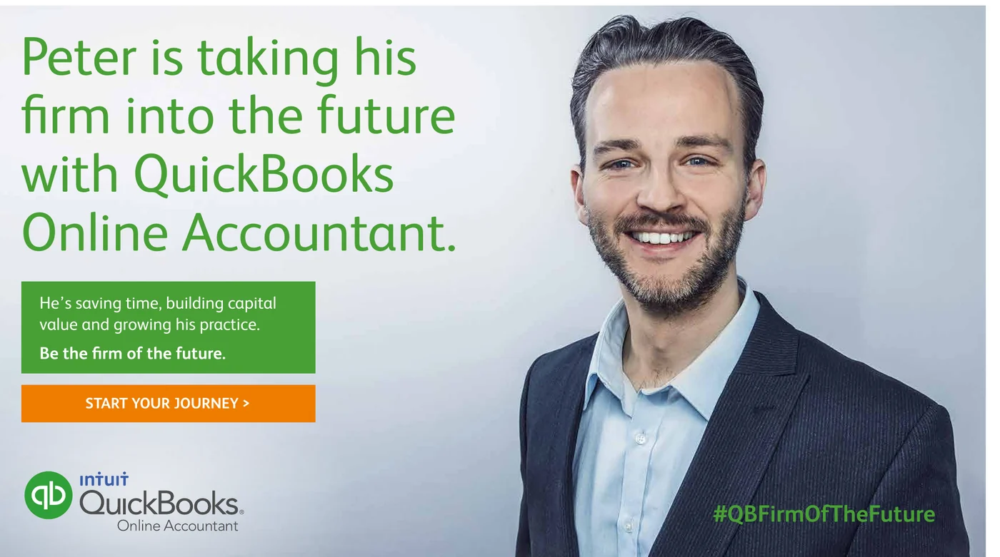
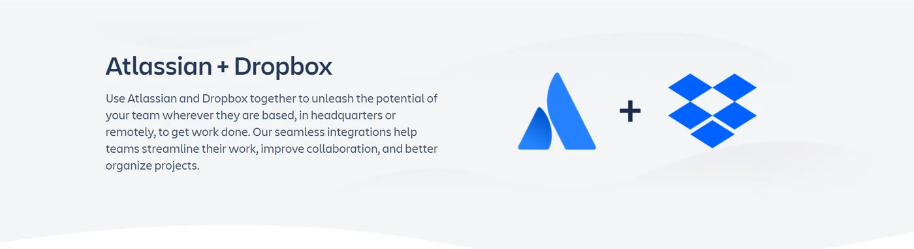
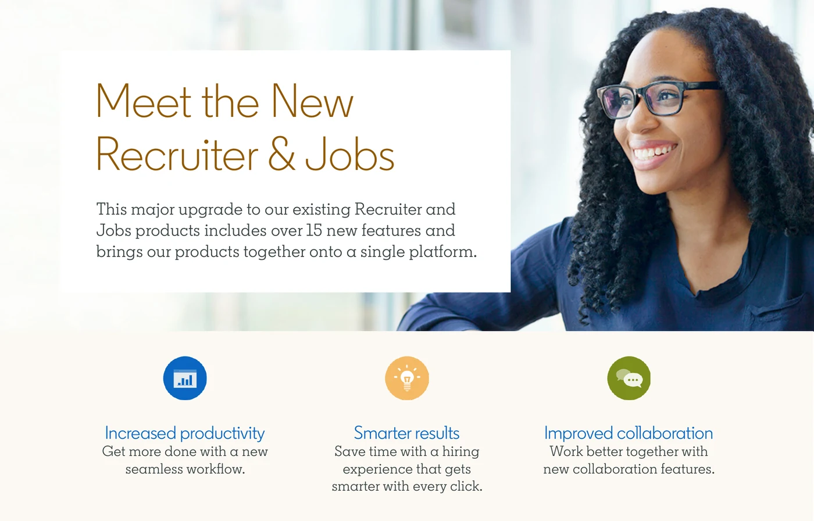

Product & Partner Marketing Leader
I'm a hands-on product and partner marketing leader with 15+ years in B2B SaaS, from Series B to public companies. I start with the customer, roll up my sleeves, and build what's needed to make the strategy land: positioning, launches, and field enablement.
At the heart of it, it's about forming meaningful relationships with customers, partners, and the teams I work alongside. With a strong product marketing foundation, I've also built partner marketing from zero and led ISV, channel, hyperscaler, and alliance motions.
I've been using AI from early on. At LinkedIn, I helped launch AI-recommended candidate matches so recruiters could find the right person faster. At Zoom, I launched an AI app bundle that helped small businesses with productivity, team engagement and customer relationships. At Intuit, I created a NotebookLM toolkit so sales reps could answer customer questions on the spot during the launch of an AI-native accounting platform.
Work
Built the App Marketplace GTM function from zero across a 2,000+ integration ecosystem as Zoom expanded from Meetings to a collaboration and communication platform. Led a team of marketers and 20+ cross-functional teammates.
$7.2M
partner ARR
Turned product gaps into closed deals across the Zoom platform
The problem
As Zoom expanded beyond meetings, building out its communication and collaboration platform, gaps in the product were blocking sales deals. Win/loss data told me where and why.
What I built
Owned the full program:
The message
Umbrella
One vendor, one contract, one workflow.
Solution · Fax + Zoom Phone
Modernize communications without leaving fax behind.
Compliance-ready · No context switching · Reliable at scale · Flexible migration
The result
Program delivered $7.2M in partner ARR
~50%
conversion lift
Launched Zoom's first AI bundle for Meetings to win back SMBs from free alternatives
The problem
Post-pandemic, free alternatives were eroding Zoom's SMB base. The answer wasn't price. It was value. SMB customers didn't know what Zoom could do for them beyond meetings.
What I built

The result
Benefit-led messaging lifted conversion ~50% vs. app-specific
Two stints. Mountain View and Melbourne, Australia, leading global QuickBooks GTM across 5 countries with 4 direct reports and 15+ cross-functional teammates globally. Returned in 2026 for the Accountant Suite launch.
8→22%
beta adoption
Built AI-powered enablement to support Accountant Suite adoption across different customer segments
The problem
Intuit's Accountant Suite was in beta with early adoption. The enablement motion was not in place for the different types of customers who needed to switch and adopt.
What I built
The result
8% to 22% beta adoption
+11%
above adoption targets
Launched a global category campaign still running today
The problem
The accounting industry was moving from desktop to cloud and Intuit had to lead that shift globally. The challenge was taking a consistent message to market across 5 countries, each with different competitors and customer readiness.
What I built

The result
11% above adoption targets globally · Campaign still running today · 80+ employee NPS
33%
above plan
Identified whitespace, built GTM from zero, landed the largest customer
The problem
The education business was growing double digits but everything was ad hoc. The work was determining where to focus, the right messaging, distribution, and GTM to make it scalable.
What I built
The result
33% above plan · Acting Like an Owner award
Owned Tier 1 strategic partner GTM: joint business planning, co-marketing, and field activation with AWS, Dropbox, and Adobe across Jira, Confluence, Jira Service Management, and Bitbucket.
Invite-only
AWS DevOps vertical GTM access
Built the joint GTM motion that unlocked AWS's DevOps vertical program
The problem
AWS and Atlassian measured success differently. Without aligning on both, the partnership would produce activity without impact.
What I built
The result
Earned invite-only access to AWS's DevOps vertical GTM program
+30%
above adoption targets
Turned a product integration into a better together customer story
The problem
Atlassian had a strong integration with Dropbox. Smart Links embedded Dropbox files directly into Jira and Confluence workflows. The technology existed. The customer story didn't.
What I built
Owned GTM strategy for Smart Links:

The result
30% above adoption targets
Led product marketing for LinkedIn's $3B Recruiter and Jobs portfolio, targeting CHROs and talent acquisition leaders globally. Customer research, messaging repositioning, C-suite alignment, and GTM execution.
+20%
CSAT improvement
Turned around a stalling $3B product launch through customer research, messaging repositioning, and C-suite alignment
The problem
LinkedIn had rolled out a new product offering to 20% of the customer base and was receiving suboptimal feedback. The AI-forward messaging wasn't landing — customers didn't understand it.
What I built
Before → after
Before
New Hiring Intelligent Platform
"Sales-like" · "Not relevant for me"
After
New Recruiter & Jobs
Be more productive · Get smarter results · Improve collaboration

The result
+20% CSAT · research methodology adopted by the business unit
Writing & Talks
I write and speak on product and partner marketing, AI in GTM, and building programs that scale.
What colleagues say
"Sharon is amazing, she was extremely proactive and managed to orchestrate and bring all partners to the finish line in a very tight timeline… [she] fully grasped the key messages and the USPs."
Eli Mann
CEO, FaxSIPit · Zoom ISV partner
"Sharon is a tenacious and dedicated marketing leader who brings together multi-organizational teams to deliver compelling marketing programs consistently at the highest standard."
Amy Lock
AWS · Alliance partner
"She really works to understand people and their reasons, needs, and motivations… [and can] guide product, engineering, and marketing professionals toward a common goal."
Tain Barzso
Head of Product, Zoom · Cross-functional colleague
"Sharon gets things done. It's as simple as that… I can give her the most basic framework of what I'm looking for and she fills in the details, adding her own unique perspective and experience."
Rebecca Kalogeris
VP of Marketing, Pragmatic Institute · Manager